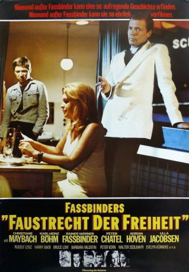
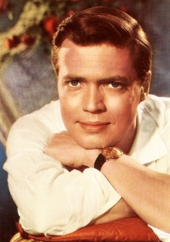

#7956 Faustrecht der Freiheit
Alternativ: Fox and His Friends (Englischer Titel)
 
 IMDB-Wertung: 7.8 / 10
IMDB-Wertung: 7.8 / 10  Metascore: 0
Metascore: 0 
Franz, genannt Fox, ist ein arbeitsloser Schausteller, der sich durch einen Lottogewinn in die höheren Kreise einkauft. Er verliebt sich in den Unternehmerssohn Eugen, mit dem er prompt zusammenzieht. Doch Franz kann seine proletarische Herkunft weder verleugnen noch verbergen. Er wird von der besseren Gesellschaft nicht akzeptiert. Stattdessen nutzt man seine Naivität aus, bis die unausweichliche Katastrophe eintritt.
Jahr: 1975
Dauer: 123 Minuten
FSK: 16
Land: West-Deutschland Studio: Filmverlag der AutorenTonspuren:
Untertitel:
Auflösung: 1080p (1488x1080) Größe: 7823 MB
Genre: Drama, Liebe
Regisseur: Rainer Werner Fassbinder
Drehbuch: Rainer Werner Fassbinder
Soundtrack: Peer Raben
Darsteller:
- Peter Chatel als Eugen Thiess
 Rainer Werner Fassbinder als Franz Biberkopf
Rainer Werner Fassbinder als Franz Biberkopf-  Karlheinz Böhm als Max
- Adrian Hoven als Wolf Thiess, Eugen's father
- Christiane Maybach als Hedwig
 Harry Baer als Philip
Harry Baer als Philip Kurt Raab als Wodka-Peter
Kurt Raab als Wodka-Peter Brigitte Mira als Shopkeeper #2
Brigitte Mira als Shopkeeper #2- Barbara Valentin als Max's wife
 Elma Karlowa als Shopkeeper #1
Elma Karlowa als Shopkeeper #1 Ingrid Caven als Singer in bar
Ingrid Caven als Singer in bar- Ulla Jacobsson als Eugen's mother
 El Hedi ben Salem als Salem the Moroccan (uncredited)
El Hedi ben Salem als Salem the Moroccan (uncredited) Irm Hermann als Madame Cherie / Bar Singer (uncredited)
Irm Hermann als Madame Cherie / Bar Singer (uncredited)- Hans Zander als Barman Springer
- Rudolf Lenz als Attorney Dr. Siebenkäss
 Karl Scheydt als Klaus
Karl Scheydt als Klaus- Peter Kern als Florist 'Fatty' Schmidt
- Karl-Heinz Staudenmeyer als Krapp
- Walter Sedlmayr als Car dealer
- Bruce Low als Doctor
 Marquard Bohm als American Soldier
Marquard Bohm als American Soldier- Evelyn Künneke als Secretary at Travel Agency
- Lilo Pempeit als Neighbour
- Hark Bohm als Policeman Müller (uncredited)
- Kitty Buchhammer als Madame Antoinette (uncredited)
- Dietrich Kerky als Kommissar Braun (uncredited)
- Ursula Strätz als Isabel (uncredited)
Datei: X:\1975\Faustrecht der Freiheit (1975, FSK16, 1488x1080).mkv seit 09.01.2018
Festplatte: HD 1971-1979
 Es gibt insgesamt 27 Filme in der Gruppe '1975'
Es gibt insgesamt 27 Filme in der Gruppe '1975'